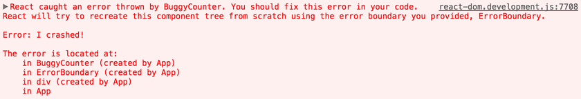

Границы ошибок
Ранее ошибки JavaScript внутри компонентов, ломали внутреннее состояние React и вынуждали его выбрасывать загадочные ошибки на последующих отрисовках. Эти ошибки всегда были вызваны более ранней ошибкой в коде приложения. React не предоставлял способа их грамотно обработать в компонентах и не мог восстановиться после того, как эти ошибки возникли.
Знакомство с границами ошибок
Ошибка JavaScript в области пользовательского интерфейса не должна ломать все приложение. Чтобы решить эту проблему для пользователей React, React 16 представляет новую концепцию «граница ошибки».
Границы ошибок - это компоненты React, которые отлавливают ошибки JavaScript в любом месте их дочернего дерева компонентов, регистрируют эти ошибки и отображают резервный интерфейс вместо поломанного дерева компонентов. Границы ошибок перехватывают ошибки во время отрисовки, в методах жизненного цикла и в конструкторах всего дерева под ними.
Компонент класса становится границей ошибки, если он определяет новый метод жизненного цикла, называемый componentDidCatch (error, info):
class ErrorBoundary extends React.Component {
constructor(props) {
super(props);
this.state = { hasError: false };
}
componentDidCatch(error, info) {
// Отображение резервного UI
this.setState({ hasError: true });
// Вы можете прологировать ошибку с помощью сервиса отчета об ошибках
logErrorToMyService(error, info);
}
render() {
if (this.state.hasError) {
// Вы можете отрисовать любой резервный UI
return Возникли ошибки.
;
}
return this.props.children;
}
}
Затем вы можете использовать его как обычный компонент:
<ErrorBoundary>
<MyWidget />
</ErrorBoundary>
Метод componentDidCatch () работает как блок catch {} JavaScript, но для компонентов. Только компоненты класса могут являться границами ошибок. На практике вы скорее всего предпочтёте объявить компонент границы ошибки один раз и использовать его во всем приложении.
Обратите внимание, что граница ошибки отлавливает только ошибки в компонентах ниже их в дереве. Граница ошибки не может отловить ошибку внутри себя. Если текущая граница ошибки проваливает попытку отобразить сообщение об ошибке, ошибка будет распространяться на ближайшую границу ошибки выше по дереву иерархии. Это тоже похоже на то, как блок catch {} работает в JavaScript.
Параметры componentDidCatch
error - это ошибка, которая была выброшена.
info - это объект с ключом componentStack. Свойство содержит информацию о стеке компонентов во время выбрасывания ошибки.
//...
componentDidCatch(error, info) {
/* Пример информации о стеке:
in ComponentThatThrows (created by App)
in ErrorBoundary (created by App)
in div (created by App)
in App
*/
logComponentStackToMyService(info.componentStack);
}
//...
Где устанавливать границы ошибок
Расположение границ ошибок зависит от вас. Вы можете обернуть компоненты верхнего уровня, чтобы отобразить сообщение типа «Что-то пошло не так» для пользователя, так же как серверные фреймворки часто обрабатывают сбои. Вы также можете обернуть отдельные виджеты в границу ошибки, чтобы защитить их от поломки остальной части приложения.
Новое поведение для необрабатываемых ошибок
Это изменение имеет важное значение. Начиная с React 16, ошибки, которые не были захвачены какой-либо границей ошибок, приведут к демонтированию всего дерева компонентов React.
Мы обсуждали это решение, но по нашему опыту полностью удалить поврежденный пользовательский интерфейс, чем оставить его видимым. Например, в таком продукте, как Messenger, если оставить сломанный пользовательский интерфейс видимым, это может привести к тому, что кто-то отправит сообщение не тому человеку. Аналогично, для приложения платежей лучше ничего не отображать, чем отображать неправильную сумму.
Это изменение означает, что как только вы мигрируете на React 16, то, вероятно, обнаружите сбои в своем приложении, которые были незаметны раньше. Добавление границ ошибок позволяет обеспечить лучший UX, когда что-то пойдет не так.
Например, Facebook Messenger обертывает содержимое боковой панели, информационной панели, журнала беседы и поля ввода сообщения в отдельные границы ошибок. Если какой-то компонент в одной из этих областей пользовательского интерфейса ломается, остальные продолжают исправно работать.
Мы также рекомендуем вам использовать сервисы отчетов об ошибках JS (или создать свои собственные), чтобы вы могли узнавать о необработанных исключениях, которые происходят в production версии, и исправлять их.
Трассировка стека компонентов
Во время разработки React 16 печатает все ошибки, возникающие при рендеринге в консоль, даже если приложение случайно проглатывает их. Помимо сообщения об ошибке и стека JavaScript, он также обеспечивает трассировку стека компонентов. Теперь вы можете увидеть, где именно в дереве компонентов произошла ошибка:
